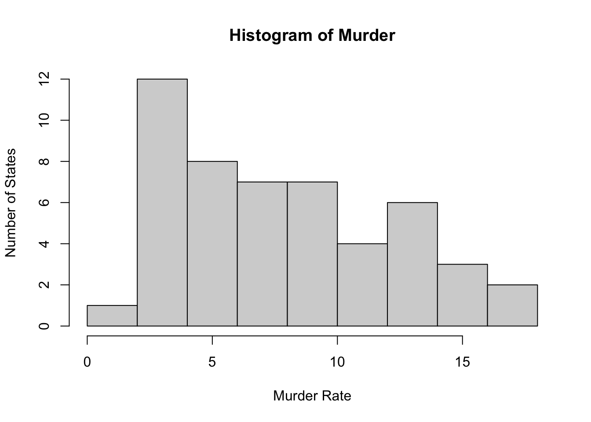
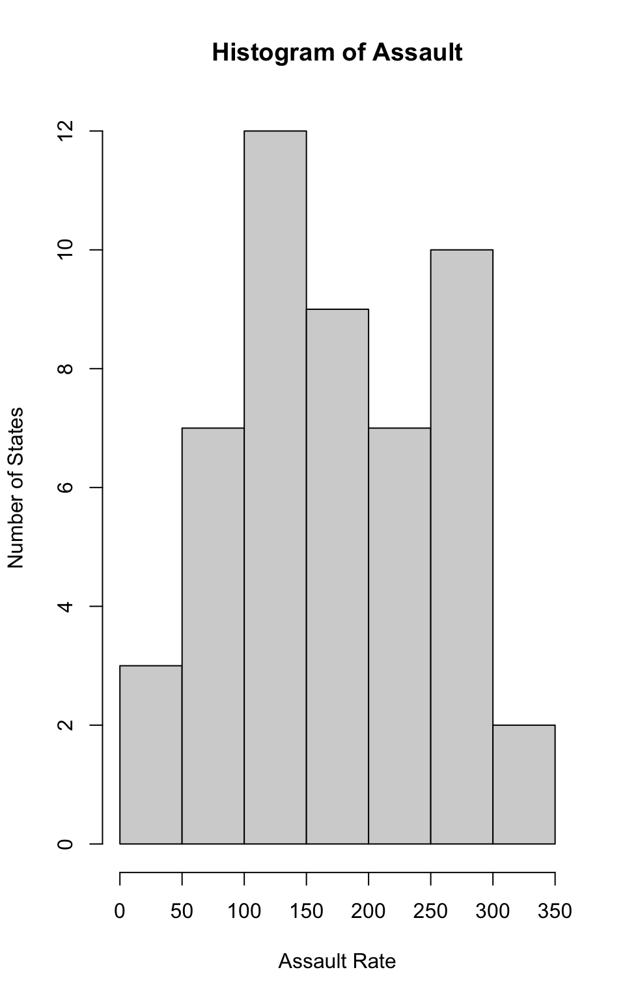
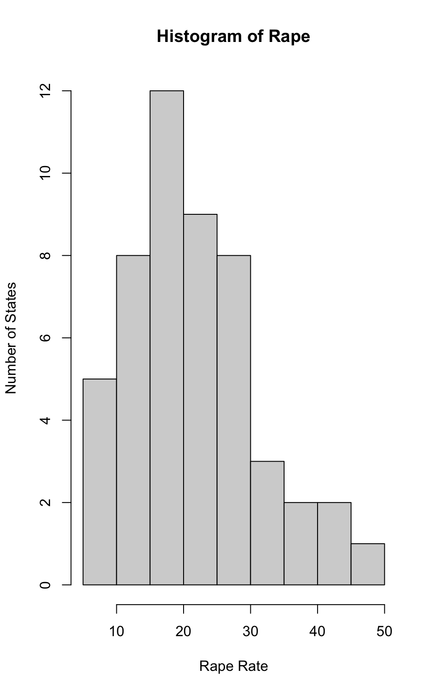
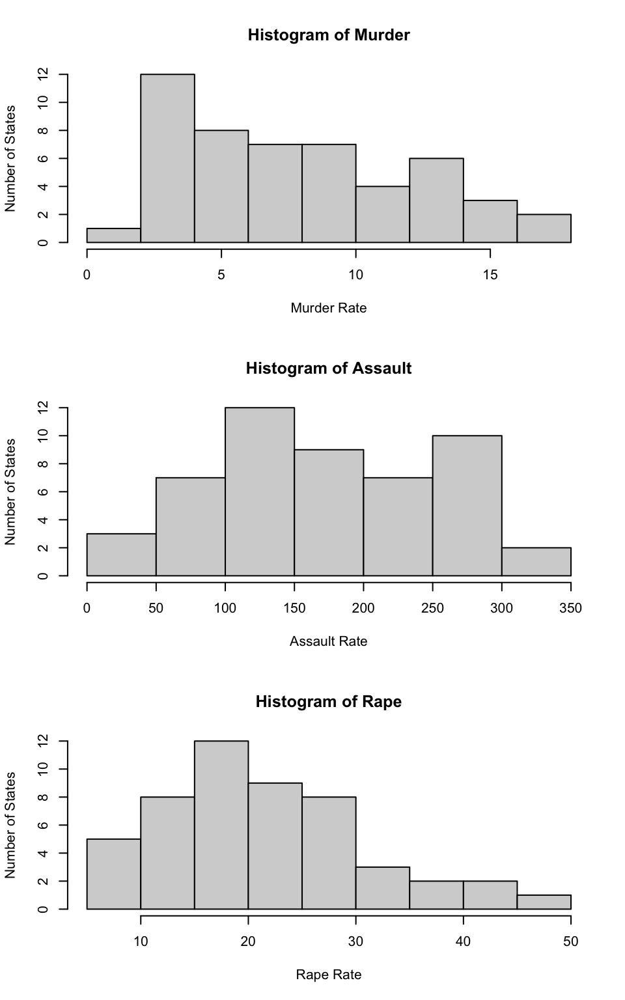
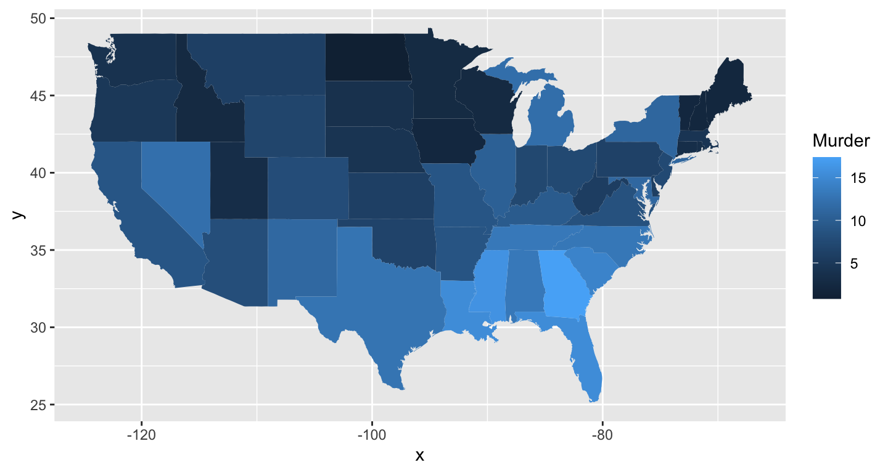

This assignment is due on Canvas on Monday 9/20 before class, at 10:15 am. Include the name of anyone with whom you collaborated at the top of the assignment.
Install the datasets package on the console below using install.packages("datasets"). Now load the library. Answer: I’ve loaded the library.
library(datasets)Load the USArrests dataset and rename it dat. Note that this dataset comes with R, in the package datasets, so there’s no need to load data from your computer. Why is it useful to rename the dataset?
Answer: It is useful to rename a dataset for our data analysis because we will be replicating analyses. This way we can separate the original file from our revised file easily by name.
dat <- USArrests #renaming the dataUse this command to make the state names into a new variable called State.
dat$state <- tolower(rownames(USArrests))dat$state <- tolower(rownames(USArrests)) This dataset has the state names as row names, so we just want to make them into a new variable. We also make them all lower case, because that will help us draw a map later - the map function requires the states to be lower case.
List the variables contained in the dataset USArrests. Answer: The variables contained are Murder, Assault, UrbanPop, Rape.
names(dat)## [1] "Murder" "Assault" "UrbanPop" "Rape" "state"What type of variable (from the DVB chapter) is Murder?
Answer: Murder is a quantitative variable.
What R Type of variable is it?
Answer: It is a numeric R Type variable.
What information is contained in this dataset, in general? What do the numbers mean?
Answer: This dataset includes information about the urban population size and rates of various crimes (murder, rape, and assault) among the 50 U.S. states. The numbers represent the rate at which the aforementioned crimes occur in each state.
Draw a histogram of Murder with proper labels and title. hist(dat$Murder, main=“Histogram of Murder”, xlab=“Murder Rate”, ylab=“Number of States”)
hist(dat$Murder, main="Histogram of Murder", xlab="Murder Rate", ylab="Number of States")
Please summarize Murder quantitatively. What are its mean and median? What is the difference between mean and median? What is a quartile, and why do you think R gives you the 1st Qu. and 3rd Qu.?
Answer: The mean for murder is 7.788 and the median for murder is 7.250. Although the mean and median are both measures of central tendency, the mean is the “balance point” for which symmetry holds. Mathematically, the mean is the sum of all the data values divdided by the total number of data values. In contrast, the median is the middle value found from putting all the data values from least to greatest. Quartiles are the three values which divide the data into equal fourths. R gives us the first and third quartiles so that we get a better sense of the distribution of a data set when it may not be symmetrical. In this case we know, 1/4 of the values fall below 4.075, and 3/4 of the values fall below 11.250.
Repeat the same steps you followed for Murder, for the variables Assault and Rape. Now plot all three histograms together. You can do this by using the command par(mfrow=c(3,1)) and then plotting each of the three.
The mean for assault is 170.8 and the median for assault is 159.0.
The mean for rape is 21.23 and the median for rape is 20.10.
hist(dat$Assault, main="Histogram of Assault", xlab="Assault Rate", ylab="Number of States")
hist(dat$Rape, main="Histogram of Rape", xlab="Rape Rate", ylab="Number of States")
par(mfrow=c(3,1))
hist(dat$Murder, main="Histogram of Murder", xlab="Murder Rate", ylab="Number of States")
hist(dat$Assault, main="Histogram of Assault", xlab="Assault Rate", ylab="Number of States")
hist(dat$Rape, main="Histogram of Rape", xlab="Rape Rate", ylab="Number of States")
What does the command par do, in your own words (you can look this up by asking R ?par)?
Answer: The command par sets the plotting parameters by letting RStudio know I want it to make a graph with 3 rows and 1 column (with the use of mfrow).
What can you learn from plotting the histograms together?
Answer: From plotting the histograms together, I can learn what kind of crime is found in the greatest number of states the most. In this case, I can learn that high assault rates are most common across the board since it has the highest rate found in the highest number of states.
In the console below (not in text), type install.packages("maps") and press Enter, and then type install.packages("ggplot2") and press Enter. This will install the packages so you can load the libraries.
Run this code:
library(maps)
library(ggplot2)
ggplot(dat, aes(map_id=state, fill=Murder)) +
geom_map(map=map_data("state")) +
expand_limits(x=map_data("state")$long, y=map_data("state")$lat)
What does this code do? Explain what each line is doing.
Answer: This code creates a map of crime rates among the 50 U.S. states, specfically murder. The first line indicates we want to create a ggplot based on USArrests; the aesthetic function indicates which variables we want to be plotted (like murder) and how to present them. The second line indicates that the graphical representation will be a map using the data on states. The third line indicates what data should be plotted on the x and y positions of the graphical depiction respectively.